日帰り温泉の復活
気軽に立ち寄り、湯に親しめる場所へ。設備や内装の修繕を進め、日帰り温泉の再開を目指します。
現在の状況ライフライン復旧済み。
健康村を先行して再生していきます。
再生への想い
岡山市の湯迫温泉にある、白雲閣と健康村。かつて人々が集った温泉旅館と温泉施設を、再び楽しめる場所へとつなぐ取り組みが始まっています。
現在、ライフラインの復旧を終え、内装・施設設備・防水・ボイラーなどの本格的な修繕に向けて準備を進めています。
まずは健康村の日帰り温泉と大衆演劇から。その先に、白雲閣の温泉旅館としての再生を目指します。営業当時の記憶を大切にしながら、一歩ずつ、その過程をお伝えしていきます。
第一段階 ─ 健康村の再生
お湯にくつろぎ、舞台を楽しむ。
そんな時間を、もう一度この場所で。
健康村を先行して再生していきます。
気軽に立ち寄り、湯に親しめる場所へ。設備や内装の修繕を進め、日帰り温泉の再開を目指します。
舞台を囲み、芝居を楽しむひとときを再び。健康村で大衆演劇を楽しめる場の復活を目指します。
営業再開時期・営業時間・料金・公演日程は、決まり次第お知らせします。
第二段階 ─ 白雲閣の再生
健康村の再生の、その先へ。
白雲閣を、再び温泉旅館として迎えられる場所にしていく計画です。
当時のパンフレットには、庭園や館内、浴場、大広間の姿が残されています。その記憶を受け継ぎながら、建物を再び生かしていく道を探っていきます。
具体的な再開時期や宿泊内容は、今後お知らせします。
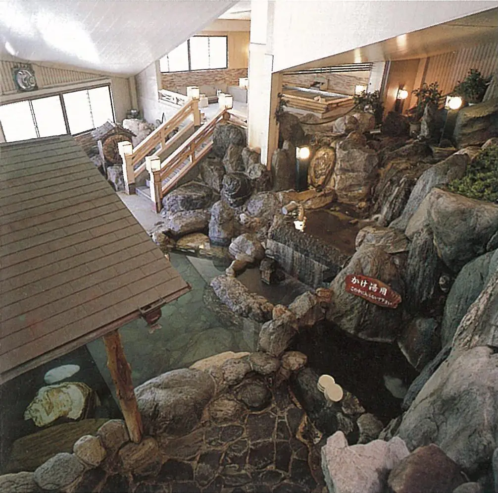
写真に残る、かつての姿
当時のパンフレットをひらくと、
この場所で過ごした時間が見えてきます。
営業当時の写真19枚を掲載しています。写真を選ぶと全体を拡大してご覧いただけます。
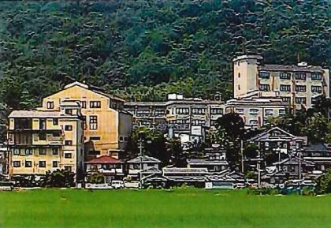
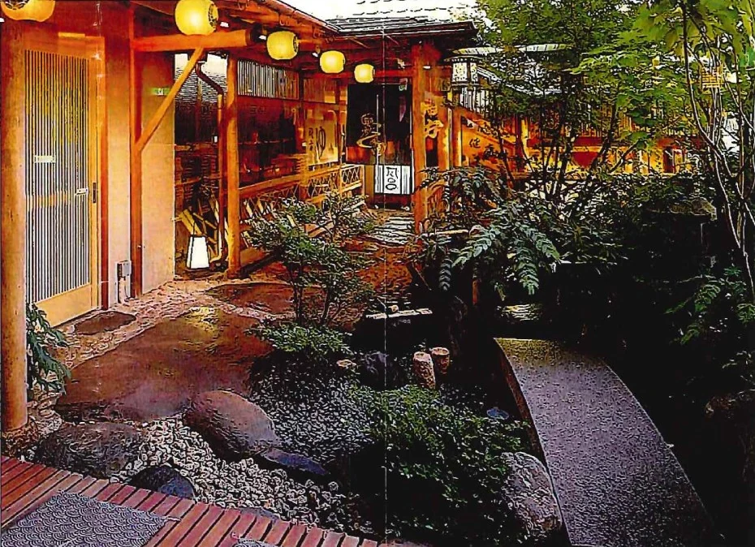
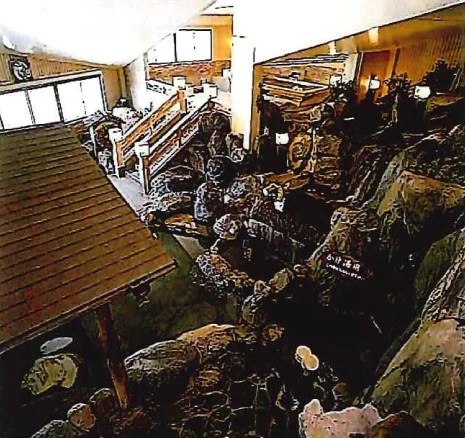
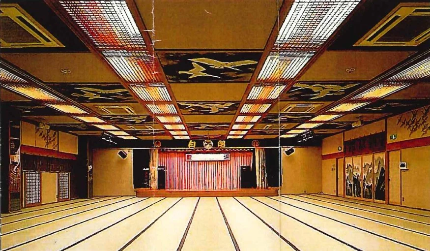
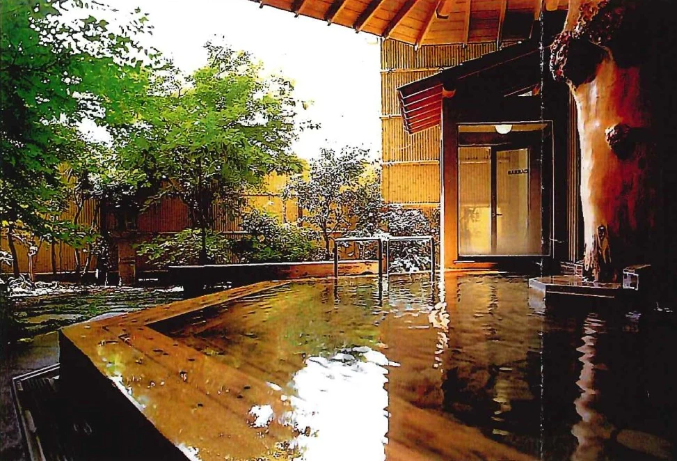
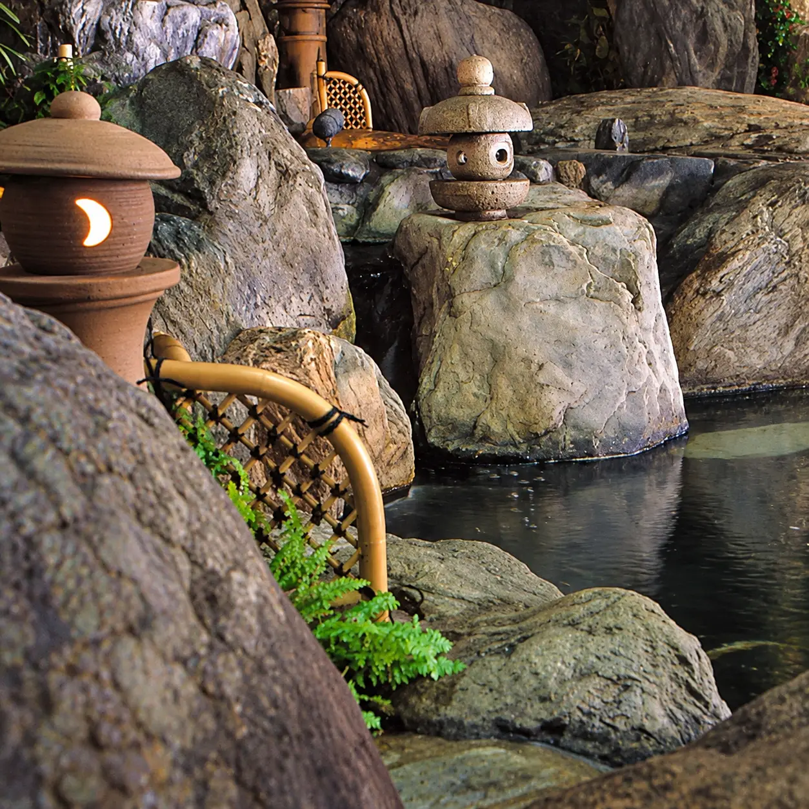
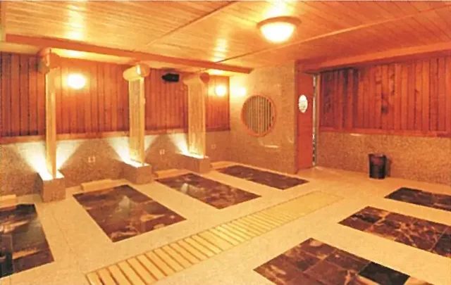
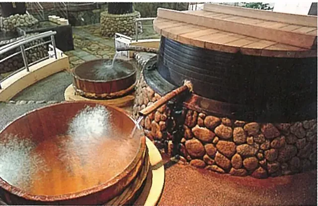
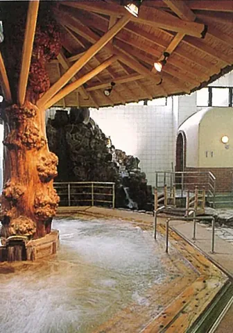
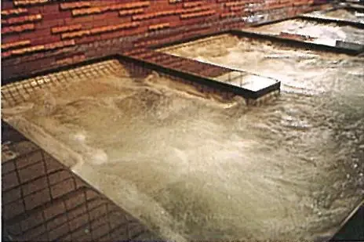
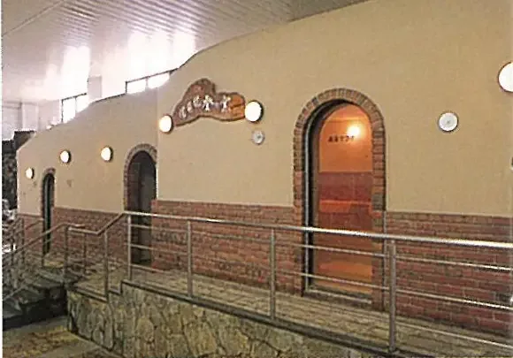
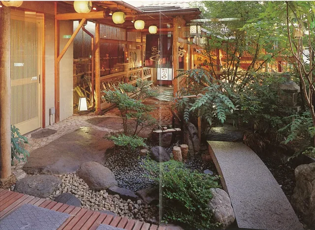
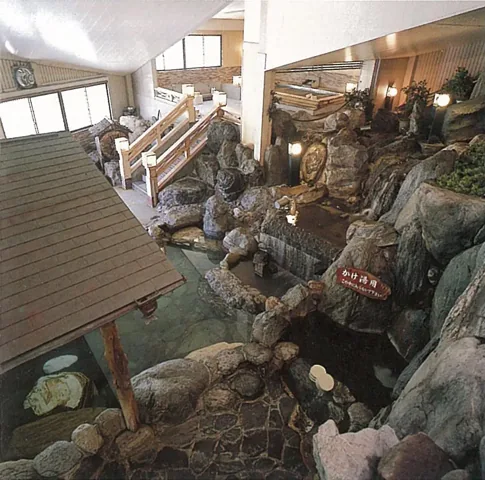
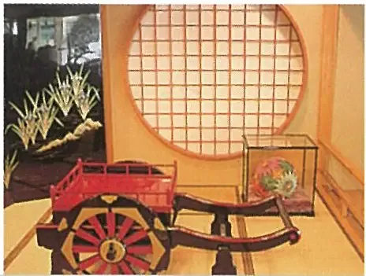
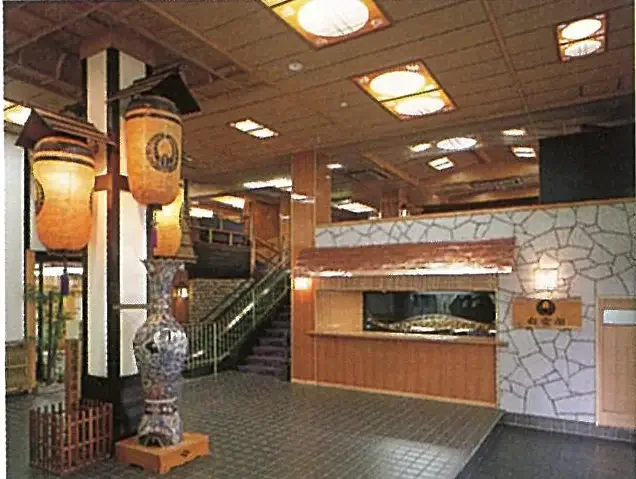
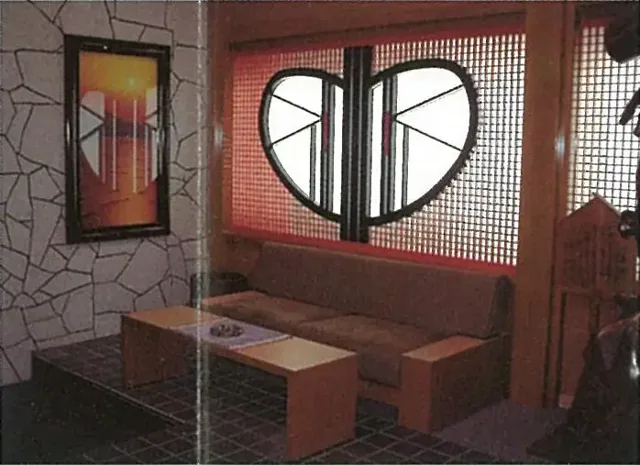
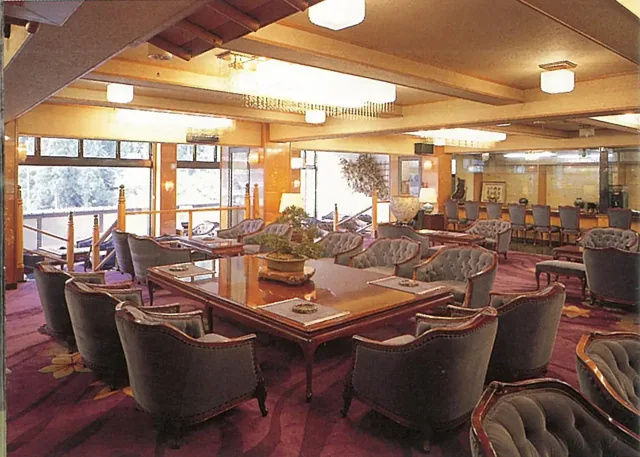
写真：営業当時の資料より。現在の施設・設備や、再開後のサービスを示すものではありません。
一歩ずつ、再生へ
大切な節目を、ここに。
再生の歩みをお伝えします。
施設の再生に向けた基盤となる、ライフラインの復旧を終えました。
内装・施設設備・防水・ボイラーなどの修繕を今後進め、日帰り温泉と大衆演劇の復活を目指します。
健康村の再生に続き、温泉旅館としての復活を目指します。
日々の記録
現場での作業や小さな変化を、
写真や動画でお伝えします。
公式アカウントは準備中です
この取り組みについて
運営会社・代表者などの正式な情報は、準備が整い次第掲載します。
お問い合わせ
お問い合わせ窓口は準備中です。
連絡先が決まり次第、こちらでご案内します。
プロジェクトに関するお問い合わせは、
下記のメールアドレスへお寄せください。
ボタンを押すと、お使いのメールアプリが開きます。
現在、施設は営業再開前です。
営業再開や公演などの情報は、決まり次第お知らせします。